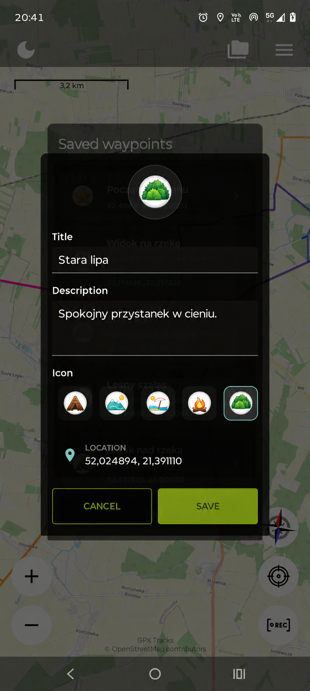
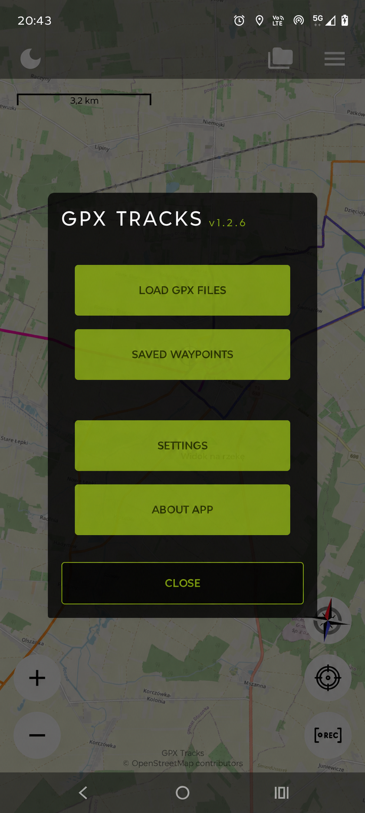

Nazywaj konkretnie
„Widok na rzekę” łatwiej rozpoznać niż „Punkt 3”. Wybieraj nazwy, które będą czytelne także za miesiąc.
WAYPOINTY KROK PO KROKU
Zapisz przydatne miejsce w kilku krokach. Zobacz, jak dodać punkt, uzupełnić jego opis i ponownie odnaleźć go na mapie.
Poradnik zawiera ilustracje na podstawie ekranów aplikacji, z przykładowymi nazwami i notatkami. Nazwy przycisków pozostawiamy po angielsku, tak jak w aplikacji. Ekran edytora przedstawia zmianę istniejącego punktu; przy dodawaniu nowego wypełniasz te same pola nazwy, opisu i ikony.
Zacznij od pierwszego punktu ↓01 / WYBIERZ MIEJSCE
Znajdź miejsce, które chcesz zapisać, dotknij go i przytrzymaj. Otworzy się formularz Add Waypoint dla wybranej lokalizacji.
Możesz zapisać punkt podczas przeglądania mapy. Nie musisz wcześniej rozpoczynać nagrywania.

02 / DODAJ SZCZEGÓŁY
Wpisz nazwę, którą łatwo rozpoznasz. Opis jest opcjonalny — wystarczy krótki, przydatny szczegół. Wybierz ikonę i naciśnij Save.
Spokojny przystanek w cieniu.
Ikony pomogą Ci odróżnić punkt widokowy, parking, szałas czy ulubione miejsce na odpoczynek.

03 / OTWÓRZ ZAPISANE MIEJSCA
Otwórz menu główne, naciskając trzy poziome kreski u góry mapy. Wybierz Saved waypoints.
Zobaczysz zapisane miejsca z ikonami, nazwami i notatkami. Dotknij punktu, aby otworzyć jego szczegóły.

04 / ODNAJDŹ PUNKT
W szczegółach punktu naciśnij Show on map, aby wyśrodkować na nim mapę. Możesz też otworzyć edytor i zmienić nazwę, opis lub ikonę.
Jeśli punkt powstał podczas nagrywania, w jego szczegółach może pojawić się powiązana trasa. Przyciski Show track on map oraz Hide track on map pozwalają ją pokazać lub ukryć na mapie.

MAŁE NAWYKI. WIĘCEJ WSPOMNIEŃ.
„Widok na rzekę” łatwiej rozpoznać niż „Punkt 3”. Wybieraj nazwy, które będą czytelne także za miesiąc.
„Kilka kroków od szlaku” to przydatna podpowiedź. Zapisz szczegół, o którym najłatwiej zapomnieć.
Edytuj punkt, gdy zmienią się plany. Aby usunąć go z mapy i listy, otwórz szczegóły, wybierz Delete waypoint i potwierdź.